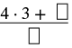
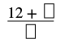
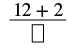
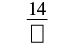
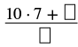
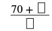
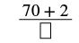
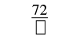

অপ্রকৃত ভগ্নাংশ ও মিশ্র ভগ্নাংশের পারস্পরিক রূপান্তর
উৎস-অনুগত উপবিভাগ · m81285-fs-id2390912। সম্পূর্ণ বইয়ের অনুবাদ এখনও চলছে। গাণিতিক চিহ্ন, সংখ্যা ও মূল কাঠামো অক্ষুণ্ণ; প্রযোজ্য ক্ষেত্রে সূত্রের শব্দলেবেল বাংলায় অনূদিত। মূল ছবির ভিতরের ইংরেজি লেবেলের অর্থ বাংলা বিবরণে আছে। স্বাধীন শিক্ষক ও ভাষা-পর্যালোচনা বাকি। অন্য উপবিভাগের উৎস-লিঙ্কে ইন্টারনেট প্রয়োজন।
অপ্রকৃত ভগ্নাংশ ও মিশ্র ভগ্নাংশের পারস্পরিক রূপান্তর
পূর্ববর্তী উৎস-উদাহরণ [fs-id1598176]-এ ভগ্নাংশের বৃত্ত ব্যবহার করে অপ্রকৃত ভগ্নাংশ -কে মিশ্র ভগ্নাংশ -এ লিখেছিলাম। ছয়টি এক-ষষ্ঠাংশ একত্র করে একটি সমগ্র বানিয়েছিলাম; তার পরে দেখেছিলাম, টি টুকরোর মধ্যে কটি বাকি থাকে। দেখা গেল, -এ ছয়টি এক-ষষ্ঠাংশের একটি পূর্ণ দল ও আরও পাঁচটি এক-ষষ্ঠাংশ আছে। অর্থাৎ,
ভাগের রাশি (যাকে হিসেবেও লেখা যায়) জানায়, এক-একটি দলে টি করে রাখলে মোট কতগুলি দল হবে, তা বার করতে হবে; মোট টুকরোর সংখ্যা ভগ্নাংশের বৃত্ত ব্যবহার না করে অপ্রকৃত ভগ্নাংশকে মিশ্র ভগ্নাংশ-এ রূপান্তর করতে আমরা ভাগ করি।
অনুশীলন · এই প্রশ্নের লিঙ্ক
প্রদত্ত ভগ্নাংশটিকে মিশ্র ভগ্নাংশে রূপান্তর করো:
সমাধান
| লবকে হর দিয়ে ভাগ করো। | মনে রেখো, অর্থ । |
11-কে 6 দিয়ে ভাগ করার ধাপ: ভাজক 6, ভাগফল 1 এবং ভাগশেষ 5। |
|
| ভাগফল, ভাগশেষ ও ভাজক চিহ্নিত করো। | |
| মিশ্র ভগ্নাংশটি লেখো: । | |
| সুতরাং, |
অনুশীলন · এই প্রশ্নের লিঙ্ক
অপ্রকৃত ভগ্নাংশ -কে মিশ্র ভগ্নাংশে রূপান্তর করো।
সমাধান
| লবকে হর দিয়ে ভাগ করো। | মনে রেখো, ভাগটিকে এভাবেও লেখা যায়: । |
| ভাগফল, ভাগশেষ ও ভাজক চিহ্নিত করো। | 33-কে 8 দিয়ে ভাগ করার ধাপ: ভাজক 8, ভাগফল 4 এবং ভাগশেষ 1। তিরচিহ্ন দিয়ে ভাজক, ভাগফল ও ভাগশেষ দেখানো হয়েছে। |
| মিশ্র ভগ্নাংশটি লেখো: ভাগফল । | |
| সুতরাং, |
পূর্ববর্তী উৎস-উদাহরণ [fs-id4337911]-এ আমরা -কে অপ্রকৃত ভগ্নাংশে লিখেছিলাম। প্রথমে দেখেছিলাম, একটি সমগ্র পাঁচটি এক-পঞ্চমাংশের একটি দল। তাই আমাদের কাছে ছিল পাঁচটি এক-পঞ্চমাংশ এবং আরও চারটি এক-পঞ্চমাংশ।
নয় সংখ্যাটি এল কোথা থেকে? এখানে মোট নয়টি এক-পঞ্চমাংশ আছে: একটি সমগ্র, অর্থাৎ পাঁচটি এক-পঞ্চমাংশ, এবং আরও চারটি এক-পঞ্চমাংশ। এই ধারণা ব্যবহার করে দেখি, মিশ্র ভগ্নাংশকে কীভাবে অপ্রকৃত ভগ্নাংশ-এ রূপান্তর করা যায়।
অনুশীলন · এই প্রশ্নের লিঙ্ক
মিশ্র ভগ্নাংশ -কে অপ্রকৃত ভগ্নাংশে রূপান্তর করো।
সমাধান
| পূর্ণসংখ্যা অংশকে হর দিয়ে গুণ করো। | |
| পূর্ণসংখ্যা অংশ হল 4 এবং হর হল 3। |  অসম্পূর্ণ ভগ্নাংশ। লব: 4 গুণ 3 যোগ একটি ফাঁকা ঘর। হর: একটি ফাঁকা ঘর। |
| সরল করো। |  অসম্পূর্ণ ভগ্নাংশ। লব: 12 যোগ একটি ফাঁকা ঘর। হর: একটি ফাঁকা ঘর। |
| গুণফলের সঙ্গে লব যোগ করো। | |
| মিশ্র ভগ্নাংশের ভগ্নাংশ অংশটির লব হল 2। |  অসম্পূর্ণ ভগ্নাংশ। লব: 12 যোগ 2। হর: একটি ফাঁকা ঘর। |
| সরল করো। |  অসম্পূর্ণ ভগ্নাংশ। লব: 14। হর: একটি ফাঁকা ঘর। |
| শেষে পাওয়া যোগফলকে লব এবং আগের হরকেই হর রেখে ভগ্নাংশটি লেখো। | |
| হর হল 3। |
অনুশীলন · এই প্রশ্নের লিঙ্ক
মিশ্র ভগ্নাংশ -কে অপ্রকৃত ভগ্নাংশে রূপান্তর করো।
সমাধান
| পূর্ণসংখ্যা অংশকে হর দিয়ে গুণ করো। | |
| পূর্ণসংখ্যা অংশ হল 10 এবং হর হল 7। |  অসম্পূর্ণ ভগ্নাংশ। লব: 10 গুণ 7 যোগ একটি ফাঁকা ঘর। হর: একটি ফাঁকা ঘর। |
| সরল করো। |  অসম্পূর্ণ ভগ্নাংশ। লব: 70 যোগ একটি ফাঁকা ঘর। হর: একটি ফাঁকা ঘর। |
| গুণফলের সঙ্গে লব যোগ করো। | |
| মিশ্র ভগ্নাংশের ভগ্নাংশ অংশটির লব হল 2। |  অসম্পূর্ণ ভগ্নাংশ। লব: 70 যোগ 2। হর: একটি ফাঁকা ঘর। |
| সরল করো। |  অসম্পূর্ণ ভগ্নাংশ। লব: 72। হর: একটি ফাঁকা ঘর। |
| শেষে পাওয়া যোগফলকে লব এবং আগের হরকেই হর রেখে ভগ্নাংশটি লেখো। | |
| হর হল 7। |